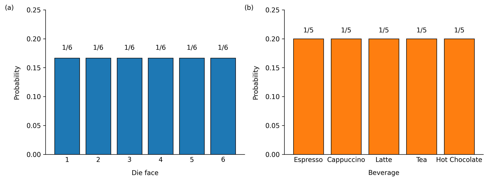
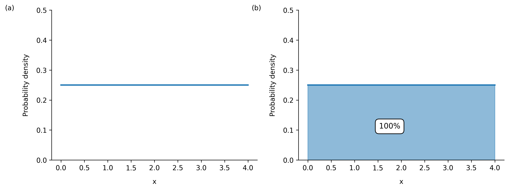
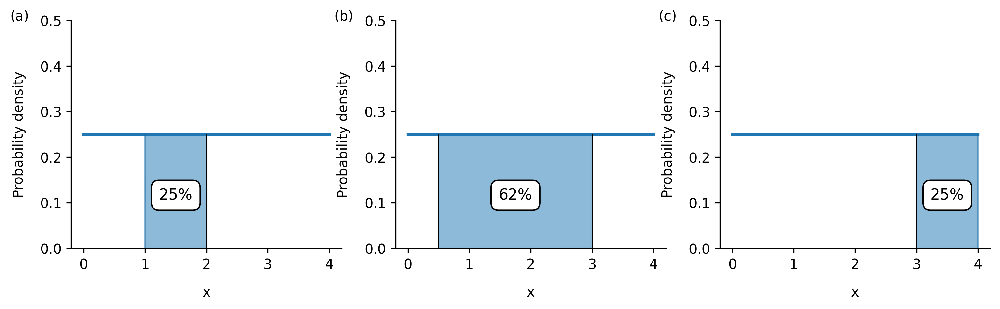
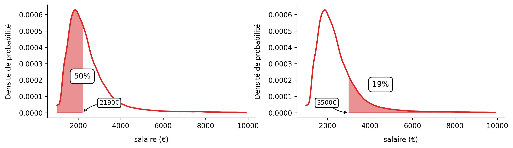
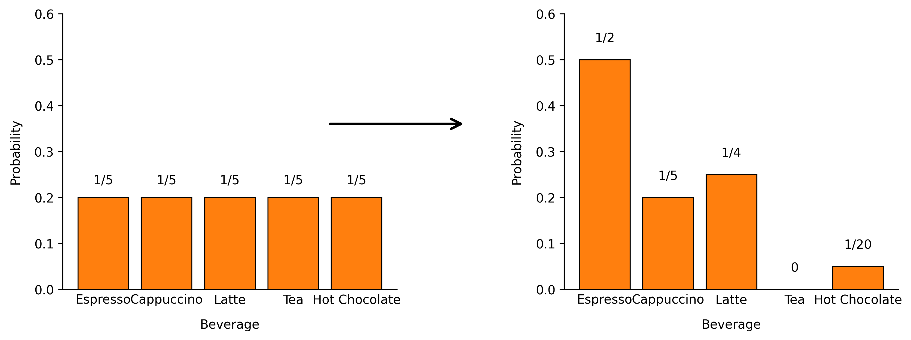

Welcome, you're in the right place! Getting to grips with the notion of p-value starts with a solid understanding of what probability is and how it's calculated. In fact, the p in p-value simply stands for probability. Once you've got the fundamentals down, the p-value won't hold any mystery for you, promise!
Elementary probabilities
Probability is used to measure chance and understand how it is distributed. In other words, it tells us how likely an event is to occur. As such, the probability of an event is a real number between 0 and 1 (or between 0% and 100%) :
- 0 means the event is impossible,
- 1 means the event is certain,
- all other values form a gradient, ranging from unlikely events to highly probable ones.
Mathematicians use $\mathbb{P}$ to denote the measure that associates an event with its probability. In some simple cases, calculating probabilities is straightforward and only requires a few basic manipulations.
A tale of a die
Alice rolls a fair 6-sided die. Let $S$ denote the event “ rolling a 6 ”. Calculating its probability is then straightforward: $$\mathbb{P}(S) = 1/6 \approx 0.17 \approx 17\%$$
A tale of coffee
Bob the researcher heads to the laboratory's coffee machine (vending machine) to grab a hot drink before heading back to his experiments. The machine offers 5 different beverages: Espresso, Cappuccino, Latte, Tea, and Hot Chocolate. We assume that Bob has no favourite drink and chooses at random. Let $HC$ denote the event “ Hot Chocolate is chosen ”. Calculating $HC$ is likewise straightforward: $$\mathbb{P}(HC) = 1/5 = 0.2 = 20\%$$
Assuming the die is perfectly fair and that Alice is not cheating, and assuming that Bob randomly chooses his drink with no preference whatsoever, the probabilities of all possible events are said to be equally likely, i.e., they are identical for each event (Figure 1).

The sample space
A particularly important notion in probability is that of the sample space. The sample space represents the set of all possible outcomes of an experiment (all possibilities). For instance, for a roll of a 6-sided die, the sample space is simply the set of events: rolling a 1, rolling a 2, rolling a 3, rolling a 4, rolling a 5, rolling a 6. For the choice of hot drink, the sample space is the set of events: choosing an Espresso, choosing a Cappuccino, choosing a Latte, choosing a Tea, choosing a Hot Chocolate.
The sample space is in a way a “ super event ”: one could define it as the event $U$ = “ Espresso is chosen or Cappuccino or Latte or Tea or Hot Chocolate ”. Since it contains all possible outcomes of the experiment, and since the experiment itself necessarily produces one of these outcomes, the probability of the sample space is always equal to 1 (100%) — that is, when Alice rolls her 6-sided die, there is a 100% chance that the “ super event ” occurs: she will inevitably land on a 1, or a 2, or a 3, or a 4, or a 5, or a 6. In the same way, there is a 100% chance that Bob chooses either an Espresso, a Cappuccino, a Latte, a Tea, or a Hot Chocolate. This result may seem obvious, but it is essential for what follows. Don't get lost in (outer) space — more important notions are on their way!
Random variables
We need to take a brief detour through some terminology before carrying on: a random variable is any variable that takes a value at random. For instance, if $F$ is the random variable representing the face of the die that Alice landed on after her roll, then $F$ can take the values {1, 2, 3, 4, 5, 6}. In fact, the event “ rolling a 6 ” is equivalent to the event “ $F = 6$ ”. In the same way, if $D$ is the random variable representing the drink chosen by Bob, $D$ can take the values {"Espresso", "Cappuccino", "Latte", "Tea", "Hot Chocolate"}. The event “ Hot Chocolate is chosen ” is then equivalent to “ $D = $ "Hot Chocolate" ”.
We can thus list all the possible values that a random variable can take and calculate the probabilities associated with each of them. However, it is impossible to predict with certainty the exact value that will appear during a particular experiment. Using the random variables $F$ and $D$, we can rewrite:
$\mathbb{P}(F = 6) = 1/6$
$\mathbb{P}(D = \text{"Hot Chocolate"}) = 1/5$
In both of these examples, the random variables $F$ and $D$ are said to be discrete, i.e., they can only take a well-defined set of distinct values for each situation (6 for the die roll and 5 for the choice of drink). In other words, a random variable is said to be discrete when one can count the number of values it can take (even if one has to count all the way to infinity).
When random variables become continuous
As the title of this chapter suggests, continuous random variables do exist: this is the case for experiments with an infinite number of possible outcomes that form a continuum. A classic example of this type of random variable concerns people's height: let us take $H$ as the random variable representing the height of a person chosen at random from the French population (adults only). There are not just a few possible heights, but rather an infinity (a continuum) of them, such that $H$ can theoretically take any value between, say, 140 and 222 cm. In reality, a person's exact height simply depends on the precision of the measurement. The more precise the instrument, the more refined the obtained value. For instance, with a sufficiently precise ruler, one might be able to say that a given person measures 184.123456 cm, which would differ from another measuring 184.123455 cm.
When dealing with continuous random variables, one will never seek the probability that the random variable takes a single precise value such as $\mathbb{P}(H=184)$ or $\mathbb{P}(H=184.123456)$ — but will always seek the probability that it falls within a certain range of values such as $\mathbb{P}(172 \leq H \leq 184)$ or $\mathbb{P}(172.123 \leq H \leq 184.456)$. This is an absolutely fundamental point: there is no real meaning in looking at the exact value taken by a continuous random variable, given that there are an infinite number of possible outcomes, and that they cannot be counted.
To draw a link between the sample space and continuous random variables, in the example of $H$, one can loosely say that its sample space is the set of all heights between 140 and 222 cm. We thus have $\mathbb{P}(140 \leq H \leq 222) = 1\;(100\%)$. There are always two equivalent ways of interpreting a result such as this one: either one says that when a person is chosen at random from the French population, there is a 100% chance that this person measures between 140 and 222 cm (assuming that this is our sample space), or one says that 100% of the French population measures between 140 and 222 cm.
Probability density
Still with us? Brilliant... but the most exciting part is yet to come. Here is yet another fundamental notion: probability density. In the case of continuous random variables, probability density simply defines how chance is distributed across the entire sample space: it is precisely this density that gives an indication that, if a person is chosen at random from the French population, there is a greater chance that this person measures between 172 and 184 cm rather than between 190 and 202 cm. Even more remarkably: thanks to probability density, it becomes possible to know all the probabilities among the infinite number of possibilities, for any interval you choose! Every corner of the sample space can be explored.
The probability density of a random variable is a mathematical function defined across the entire sample space. To calculate the probability that a random variable falls within a given interval, one simply needs to calculate the area under the curve of the probability density between the two bounds of the interval. The notion of area under the curve is arguably the most important concept in this journey through the land of probability, and quite possibly the key to understanding continuous random variables. In fact, calculating a p-value comes down to calculating an area under a certain probability density over a certain interval... But patience — we will demystify this in detail in the next section. Let us first explore a few concrete examples.
A number between 0 and 4
Charlie picks a number at random from the interval [0, 4] and we are interested in the random variable $X$ representing this number. Already, $X$ is clearly a continuous random variable since Charlie can pick any real number between 0 and 4, be it 2, 1.41421, 2.718281828, or 3.14. The probability density associated with such an experiment is shown in Figure 2.

In this experiment, the probability density (Figure 2a) is the blue line at a height of 0.25: the probabilities are uniform across the entire sample space, which is simply the set of numbers between 0 and 4. Thus: $\mathbb{P}(0 \leq X \leq 4) = 1$. When Charlie picks a number between 0 and 4, there is a 100% chance that this number falls between 0 and 4... All these definitions to arrive at this conclusion — such is the true beauty of mathematics and its formalism. In fact, we would have been unable to write this equality without the notions of continuous random variables, sample space, and probability density.
Now, to evaluate the probability that the drawn number falls within a given interval, one simply needs to calculate the area under the probability density between the two bounds of the interval in question (Figure 3).

In Figure 3, we can see that $\mathbb{P}(1 \leq X \leq 2) = 0.25$ and $\mathbb{P}(0.5 \leq X \leq 3) = 0.62$. Once again, there are two equivalent ways of interpreting these results: if Charlie draws a number at random between 0 and 4, there is a 62% chance that the drawn number falls between 0.5 and 3. One can also say that 62% of the numbers between 0 and 4 lie between 0.5 and 3. Intuitively, you will no doubt find it logical that the probability of drawing a number between 1 and 2 is the same as that of drawing one between 3 and 4. Mathematics has just proved it: the areas are identical (Figures 2a and 2c)! In fact, the probability density here is said to be uniform (it is a straight line), meaning that the probability of falling within a given interval depends only on its length and not on its bounds. For the more mathematically minded among you, the formula is:
A tale of salaries
To make things more concrete, let us take another example: the distribution of salaries in France. The principle is exactly the same: a continuous random variable, an associated probability density, and area calculations. We assume that French people earn a net monthly salary of between €950 and €10,000. The probability density allows us to model the way salaries are distributed across the population (Figure 4). A person is drawn at random from the population. Let $S$ be the continuous random variable representing their salary (in net monthly €).

In this model, we consider that 100% of people earn between €950 and €10,000 net per month (this is our sample space). The actual INSEE data accounts for salaries above €10,000; we have omitted these for the sake of simplicity. The probability density of $S$ (Figure 4a) is clearly not uniform. Using standard notation, we can already establish: $$\mathbb{P}(950 \leq S \leq 10\,000) = 1$$ Then, to evaluate the probability that $S$ — the salary of a randomly drawn French person — falls within a certain interval, one simply needs to calculate the area under the probability density between the two bounds in question (Figure 5).

According to this model:
$\mathbb{P}(950 \leq S \leq 2190) = 0.5$
$\mathbb{P}(3\,500 \leq S \leq 10\,000) = 0.19$
In other words, if a person is drawn from the French population, there is a 50 % chance that their salary is below €2,190 net per month, as the area under the density between 950 and 2,190 represents 50 % of the total area. In the same way, if a person is drawn at random from the French population, there is a 19 % chance that their salary is above €3,500 net per month, as the area between 3,500 and 10,000 represents 19 % of the total area (19 % of the sample space). Once again, these probabilities can also be viewed differently: 50 % of people in France earn less than €2,190 net per month (meaning 50 % earn more) and 19 % of people in France earn more than €3,500 net per month (81 % earn less). The value that splits the total area (the sample space) into two equal halves of 50 % is furthermore called the median.
Conditional probabilities
Calculating probabilities via areas was the first major point of this chapter. Before discussing p-values, we must turn our attention to the other big piece of the puzzle: conditional probabilities. When calculating probabilities, it is possible to refine their precision by adding known — or assumed true — information. Instead of calculating the probability of an event on its own, we say that we are calculating the probability of this event given that another event has occurred. The event that has occurred may have been truly observed or simply be a belief assumed to be true. For instance, for Bob picking a hot drink from the vending machine, if we know that he dislikes tea and has never once had a Hot Chocolate in 4 years of working there, then the probabilities of him choosing one drink or another will likely be adjusted (Figure 6). Even though the distribution of chance changes, it is essential to maintain a sample space where the sum of all probabilities equals 1.

In the same way, for salaries, it is possible to adjust probabilities through our beliefs or the information available to us: being a man or a woman, working in the public or private sector, and so on. Thus, the probability of earning at least €3,500 net per month (or less than €2,190) is not the same given that one is a man or a woman, that one works in the public or private sector, and so on.
If our belief — truly observed or assumed to be true — is that the person is a woman, and we wish to calculate the probability that she earns more than €3,500 net per month, then this new piece of information changes everything, given that beliefs influence probabilities. One must not use the same probability density as the one that would have been used had we known nothing about this person. One must instead rely on the density that accounts for this belief and reflects this reality — that is, the one that describes solely the distribution of women's salaries.
Using standard notation, the probability given a belief is written with a vertical bar (pipe). Denoting by $♀$ the event: “ the person is a woman ”, the probability that our random variable $S$ is greater than 3,500 given that the person is a woman is written as: $$\mathbb{P}(S \geq 3500 \mid ♀)$$
Unfortunately, in France, we know that: $\mathbb{P}(S \geq 3500 \mid ♀) \lt \mathbb{P}(S \geq 3500 \mid ♂)$ : if a person is a woman, the probability that she earns more than €3,500 net per month is lower than if she were a man.
In all of these cases, probabilities depend on what one knows or what one believes to know.
A common pitfall
It is common to confuse the probability of an event $A$ given another event $B$ with the probability of $B$ given $A$. One might think that the two probabilities $\mathbb{P}(A \mid B)$ and $\mathbb{P}(B \mid A)$ are identical and equivalent, but this is not the case at all. Even if $A$ and $B$ are related, the probabilities are generally different. Confusing these two probabilities can lead to serious errors of interpretation, as knowing the consequence of an event does not directly give the probability of its cause.
A classic example of such confusion concerns the link between being ill and testing positive for the disease in question. As an illustration, let us take the event $C$: “ David has Covid-19 ” and the event $P$: “ The PCR test is positive ”. One often confuses the probability of truly being ill given that the test is positive with the probability that the test is positive given that one is ill. Even if this is not immediately obvious, these two probabilities are indeed different: $$\mathbb{P}(C \mid P) \neq \mathbb{P}(P \mid C)$$
Even though they may seem similar, they do not mean the same thing at all. The second, $\mathbb{P}(P \mid C)$, corresponds to what is known as the sensitivity of the test: its ability to correctly detect ill individuals. But it is the first, $\mathbb{P}(C \mid P)$, that truly matters in everyday life: if my test is positive, to what extent can I believe that I actually have Covid? You can replace the event of “ having Covid ” with any outcome of a medical test, such as being pregnant. Of course, being pregnant is not an illness! But what we are really interested in is also the probability of truly being pregnant when the test comes back positive.
Let us take a concrete example to fully grasp the nuance. Let $R$ be the event “ The person is a sexual offender ” and $♂$ the event “ the person is a man ”. In France, according to INSEE, we obtain: $\mathbb{P}(♂ \mid R) = 0.97$: the probability that a person is a man given that they are a sexual offender is 97%. In other words, among individuals identified as sexual offenders, 97% are men. Fortunately, the converse is not true: if a person is a man, the probability that they are a sexual offender remains far below 97% — it would therefore be wrong to claim that, among all men, 97% are sexual offenders. We can nonetheless establish the relation: $$\mathbb{P}(R \mid ♀) \lt \mathbb{P}(R \mid ♂) \lt \mathbb{P}(♂ \mid R)$$
In everyday life, many people confuse these two probabilities and wrongly assume that if $\mathbb{P}(A \mid B)$ is high (or low), then $\mathbb{P}(B \mid A)$ must necessarily be high (or low) as well. The next time you come across this type of argument, take a moment to ask yourself whether a misunderstanding could have led to this conclusion, whether intentional or not.
A tale of height
To cement these ideas once and for all, let us take another concrete yet somewhat lighter example: people's height. The way of predicting a person's height can vary according to certain characteristics such as sex and nationality: in general, men are taller than women and Swedes are taller than the French. The probability of being taller than 172 cm is not the same depending on the information — or beliefs — available about the person: whether they are a French woman, a Swedish woman, a French man, or a Swedish man. This example will be explored in detail in the last section of the page, where you will be able to experiment for yourself.
And be careful not to confuse: the probability that a person is taller than 172 cm given that they are Swedish is not the same as the probability that they are Swedish given that they are taller than 172 cm.
The probability density (the way chance is distributed) of the random variable representing people's height is said to be normal.
The normal distribution
A probability density is said to be normal when the associated random variable follows a normal distribution. In this type of distribution, values close to the mean are the most probable. Conversely, values further away become increasingly rare as one approaches the extremes. Two parameters are necessary and sufficient to describe a normal density: the mean $\mu$, which indicates where the probability of obtaining a value is highest, and the standard deviation $\sigma$, which gives an indication of how spread out the values are around the mean.
Graphically, a normal density forms a bell-shaped curve, known as a Gaussian curve or Gaussian. This curve is symmetrical: deviations to the left and to the right of the mean behave in the same way. In summary, the normal distribution describes situations where most values cluster around a mean $\mu$, whilst values far from it remain rare. Since the distribution is symmetrical, large values are just as unlikely as small ones. People's height, pupils' marks on a class test, the amount of sleep in a single night, and the time spent queuing at a checkout are all examples of normal densities: most values cluster around a mean, and the further one moves away from this mean, the rarer the cases become. The distribution of numbers between 0 and 4 and the salaries of people in France do not follow a normal distribution.
Over to you
To explore the notions discussed so far, let us revisit the example of the random variable $H$ whose density is normal: most people have a height close to the overall mean, and there are fewer and fewer individuals as one considers increasingly tall (or increasingly short) heights.
By considering different assumptions about a person's sex and nationality, you can calculate the probabilities that the random variable $H$ (height) falls within a certain interval given the beliefs you have chosen.